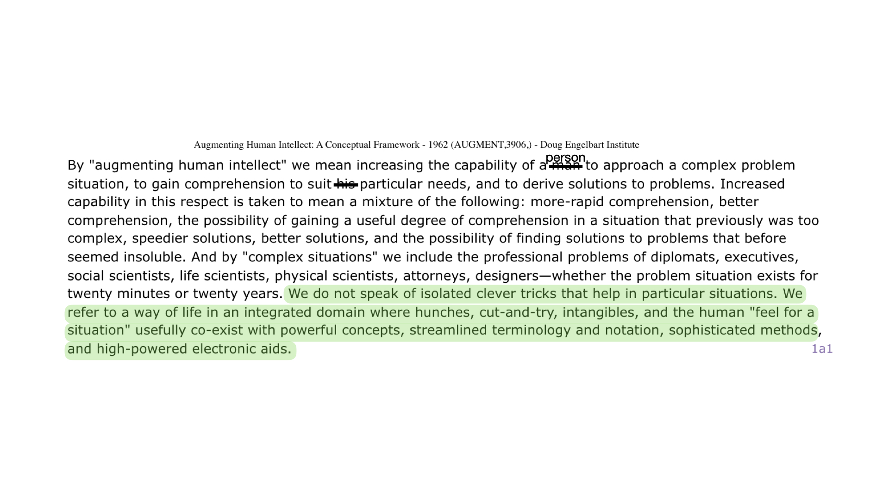

class: center, middle # Otovo - AI Tools Workshop --- # Agenda 1. Introduce AI as Augmentation 2. ChatGPT as a Useful Tool 3. Prompt Engineering Basics 4. How to Use Custom GPTs 5. AI Tools for General Productivity 6. Specialized AI Tools for Management, Marketing, Design, Development and beyond --- # Hi! -- - Hi! I'm Lucas! = AI Engineer <img src="../notebooks/assets-resources/lucas-ai-funny-profile.png" style="width: 60%;"> (credits to Kristian Klette) --- # About me <img src="../notebooks/assets-resources/ai-research.png" style="width: 100%;"> --- # About me <img src="../notebooks/assets-resources/oreilly-lucas.png" style="width: 100%"> --- # About me - I also love __losing in jiu jitsu competitions__ <img src="../notebooks/assets-resources/jiu-jitsu-competition.png" style="width: 70%;"> --- # What This Workshop Is and What It Is Not - __What it is:__ -- - Introduction to AI tools that might help you in your daily work -- - We'll start with general tools and ideas -- - Then we'll move to specific tools & frameworks hopefully tailored to your specific workflow -- - This workshop intends to be a collaborative engagement to discuss AI augmentation tools -- - __What it is not:__ -- - Not a lecture you about the hype of AI -- - Also not this → “Hey look at all this extra work you could do” --- # What is Augmentation? <img src="../notebooks/assets-resources/augmentaiton-engelbart-title.png" style="width: 100%;"> --- # Augmentation = Enhancing Capability Through Tools <img src="../notebooks/assets-resources/engelbart-quote/engelbart-quote.001.jpeg" style="width: 130%; margin-left: -75pt; margin-top: -35px;"> --- # Augmentation = Enhancing Capability Through Tools <img src="../notebooks/assets-resources/engelbart-quote/engelbart-quote.002.jpeg" style="width: 130%; margin-left: -75pt; margin-top: -35px;"> --- # Augmentation = Enhancing Capability Through Tools  --- <img src="../notebooks/assets-resources/douglas-engelbart-the-boss.png", style="width: 80%; margin-left: 50pt"> --- # AI as Augmentation? - AI is a great candidate for an augmentation tool! -- - Most things we do in a computer is text in and text out --- # ChatGPT is a Text Prediction Engine <img src="../notebooks/assets-resources/text-prediction-blnks.png" style="width: 100%"> --- # ChatGPT is a Text Prediction Engine - Large Language Models (LLMs) are trained to predict the most likely next word <img src="../notebooks/assets-resources/chatgpt-text-prediction-1.png" style="width: 80%; margin-top: -10pt; margin-left: 80px margin-top: -10pt; margin-left: 80px"> --- # ChatGPT is a Text Prediction Engine - Large Language Models (LLMs) are trained to predict the most likely next word <img src="../notebooks/assets-resources/chatgpt-text-prediction-2.png" style="width: 80%; margin-top: -10pt; margin-left: 80px"> --- # ChatGPT is a Text Prediction Engine - Large Language Models (LLMs) are trained to predict the most likely next word <img src="../notebooks/assets-resources/chatgpt-text-prediction-3.png" style="width: 80%; margin-top: -10pt; margin-left: 80px"> --- # ChatGPT is a Text Prediction Engine - Large Language Models (LLMs) are trained to predict the most likely next word <img src="../notebooks/assets-resources/chatgpt-text-prediction-4.png" style="width: 80%; margin-top: -10pt; margin-left: 80px"> --- # ChatGPT is a Text Prediction Engine - Large Language Models (LLMs) are trained to predict the most likely next word <img src="../notebooks/assets-resources/chatgpt-text-prediction-5.png" style="width: 80%; margin-top: -10pt; margin-left: 80px"> --- # ChatGPT is a Text Prediction Engine - Large Language Models (LLMs) are trained to predict the most likely next word <img src="../notebooks/assets-resources/chatgpt-text-prediction-6.png" style="width: 80%; margin-top: -10pt; margin-left: 80px"> --- # ChatGPT is a Text Prediction Engine - Large Language Models (LLMs) are trained to predict the most likely next word <img src="../notebooks/assets-resources/chatgpt-text-prediction-7.png" style="width: 80%; margin-top: -10pt; margin-left: 80px"> --- # Not Just Text Prediction? -- - AI shows signs of intelligence across different experimental tasks -- - "Sparks of Artificial General Intelligence: Early experiments with GPT-4" <img src="../notebooks/assets-resources/sparks-of-agi.png" style="width: 110%; margin-left: -30pt; margin-top: -15pt;"> --- # AI Shows Signs of Problem Solving - __Problem solving__: GPT-4 could solve complex math problems <img src="../notebooks/assets-resources/gpt4-math.png" style="width: 80%; margin-left: 50px"> --- # AI Shows Signs of Creativity - __Creativity__: GPT-4 could generate an "art" piece in the style of Kandinsky using Javascript code <img src="../notebooks/assets-resources/js-kandisnky-gpt4.png" style="width: 90%; margin-left: 40px"> --- # AI Shows Signs of Common Sense Reasoning - __Common sense__: GPT-4 displayed forms of common sense reasoning tested through standard psychology tests adapted to avoid training bias <img src="../notebooks/assets-resources/gpt4-common-sense.png" style="width: 100%; margin-left: 30px"> --- # Limitations of AI Capabilities - __Lacks deep understanding__ -- - __Challenges with complex reasoning__ -- - __Inconsistencies in performance__ -- - __Lacks core features of human intelligence like composing concepts together in complex scenarios__ -- - _These limitations point towards the need for human-AI collaboration (augmentation as Engelbart)_ ??? 1. GPT4's answers often show a naive and superficial understanding of context 2. Solution strategies often lacks desired depth and strategy for a given complex problem 3. Inconsistencies: gpt4 limitations on tasks that require expert knowledge pointing to surface level understanding --- # ChatGPT as a Complementary Tool <img src="../notebooks/assets-resources/mit-ai-language-would-be-useful.png" style="width: 100%"> --- # ChatGPT as a Complementary Tool <img src="../notebooks/assets-resources/harvard-ai-education.png" style="width: 90%;"> -- - Chris Dede: _When do a person and AI working together do things that neither one could do as well on their own?_ <p style="font-size: 14px; margin-top: 10px;"> <sup></sup> <a href="https://www.gse.harvard.edu/ideas/edcast/23/02/educating-world-artificial-intelligence">Educating in a World of Artificial Intelligence </a> </p> <p style="font-size: 14px; margin-top: 10px;"> <sup></sup> <a href="https://en.wikipedia.org/wiki/Christopher_Dede">Educational Researcher at the Harvard Graduate School of Education </a> </p> ??? 1. Dede points out that AI's capabilities encourage humans to develop skills and deliver performances that surpass what AI can achieve, thus fostering a culture of continuous improvement and high standards in professional settings. 2. This is the question I want to permeate this presentation with. Rather than think about it in terms of the AI does for us, we should thnk about it in terms of what can we do now that we could not do before? --- # ChatGPT as a Complementary Tool - ChatGPT does not think, but it is a great tool for most digital tasks -- - Just because your toaster doesn't think, -- - It does not mean you shouldn't trust its ability to make you toast <img src="../notebooks/assets-resources/toaster-thinking.png" alt="" style="margin-left: 30px; width: 40%;"> ??? - You use a hammer, and you don't stop to consider whether or not the hammer understands what a nail is --- # What Can ChatGPT Do? <img src="../notebooks/assets-resources/andrej-karpathy-tweet-gpt.png" style="width: 100%"> --- # What Can ChatGPT Do? <img src="../notebooks/assets-resources/chatgpt-can-do.png" style="width: 70%;"> ??? They filtered through thousands of reddit posts about gen ai usability --- # What Can ChatGPT Do? <img src="../notebooks/assets-resources/chatgpt-tasks/chatgpt-tasks.001.jpeg" style="width: 110%;"> --- # What Can ChatGPT Do? <img src="../notebooks/assets-resources/chatgpt-tasks/chatgpt-tasks.002.jpeg" style="width: 110%;"> --- # What Can ChatGPT Do? <img src="../notebooks/assets-resources/chatgpt-tasks/chatgpt-tasks.003.jpeg" style="width: 110%;"> --- # What Can ChatGPT Do? <img src="../notebooks/assets-resources/chatgpt-tasks/chatgpt-tasks.004.jpeg" style="width: 110%;"> --- # What Can ChatGPT Do? <img src="../notebooks/assets-resources/chatgpt-tasks/chatgpt-tasks.005.jpeg" style="width: 110%;"> --- # What Can ChatGPT Do? <img src="../notebooks/assets-resources/chatgpt-tasks/chatgpt-tasks.006.jpeg" style="width: 110%;"> --- # What Can ChatGPT Do? <img src="../notebooks/assets-resources/chatgpt-tasks/chatgpt-tasks.007.jpeg" style="width: 110%;"> --- # What Can ChatGPT Do? <img src="../notebooks/assets-resources/chatgpt-tasks/chatgpt-tasks.008.jpeg" style="width: 110%;"> --- # What Can ChatGPT Do? - Generating Ideas <img src="../notebooks/assets-resources/generating-ideas.png" style="width: 90%;"> --- # What Can ChatGPT Do? - Content Generation <img src="../notebooks/assets-resources/content-generation-example.png" style="width: 70%;"> --- # What Can ChatGPT Do? - Editing text <img src="../notebooks/assets-resources/editing-text-example2.png" style="width: 100%;"> --- # What Can ChatGPT Do? - Editing text <img src="../notebooks/assets-resources/editing-text-example.png" style="width: 70%;"> --- # What Can ChatGPT Do? - Drafting emails <img src="../notebooks/assets-resources/drafting-emails.png" style="width: 75%;"> --- # What Can ChatGPT Do? - Simple Explainers <img src="../notebooks/assets-resources/simple-explainer.png" style="width: 75%;"> --- # What Can ChatGPT Do? - Translating Natural Language to Specific Formulas or Programming Languages (SQL, Excel, Python, etc...) <img src="../notebooks/assets-resources/sql-query.png" style="width: 75%;"> --- # What Can ChatGPT Do? - See the full list [here](https://hbr.org/2024/03/how-people-are-really-using-genai?utm_source=bensbites&utm_medium=newsletter&utm_campaign=daily-digest-ai-businesses-for-solo-devs) --- class: center, middle # What Can ChatGPT Do? --- # Free vs Paid - What GPT-4 can do that ChatGPT free can't: - Generate better answers -- - Read and process images -- - Run code and perform data analysis -- - Process documents like pdfs and csv files -- - Research the web --- class: center, middle <h2> <span style="background-color: lightgreen"> Practical Session - Using GPT4 in the OpenAI Platform + Find a cool usecase! </span> </h2> --- # Prompt Engineering: Prompt Basics - A Prompt is a piece of text that conveys your intention to the AI -- - Intention can be: question, instruction, request for behavior/persona ??? - When you prompt you should consider that you want to increase the probability of getting a correct return --- # Prompt Engineering: Prompt Basics ## Components of the prompt <img src="../notebooks/assets-resources/prompt-basics/prompt-basics.004.jpeg" width="800px" style="margin-left: -20px; margin-top: -40px;"> --- # Prompt Engineering: Prompt Basics ## Components of the prompt: <span style="color: green">instruction</span> <img src="../notebooks/assets-resources/prompt-basics/prompt-basics.005.jpeg" width="800px" style="margin-left: -20px; margin-top: -40px;"> --- # Prompt Engineering: Prompt Basics ## Components of the prompt: <span style="color: green">instruction</span>, <span style="color: black">context</span> <img src="../notebooks/assets-resources/prompt-basics/prompt-basics.006.jpeg" width="800px" style="margin-left: -20px; margin-top: -40px;"> --- # Prompt Engineering: Prompt Basics ## Components of the prompt: <span style="color: green">instruction</span>, <span style="color: black">context</span> <span style="color: #0d8eb9">input data</span> <img src="../notebooks/assets-resources/prompt-basics/prompt-basics.007.jpeg" width="800px" style="margin-left: -20px; margin-top: -40px;"> --- # Prompt Engineering: Prompt Basics ## Components of the prompt: <span style="color: green">instruction</span>, <span style="color: black">context</span> <span style="color: #0d8eb9">input data</span> , <span style="color: red">output indicator</span> <img src="../notebooks/assets-resources/prompt-basics/prompt-basics.008.jpeg" width="800px" style="margin-left: -20px; margin-top: -40px;"> --- # Prompt Engineering: Prompt Basics ## Tip on Output indicators - __Use Structured Prompting!!__ ``` <begin recipe> ***Content*** <end recipe> ``` <span style="background-color: lightgreen"> __Quiz Example__ </span> --- <img src="../notebooks/assets-resources/quiz-example.png" style="width: 120%; margin-left: -50pt"> --- # Prompt Engineering: Prompt Basics ## Extra Component: _System Prompt_ -- - System prompts are prompts that will guide and constrain the behavior of the AI throughout your interaction -- - You can use these to turn ChatGPT into specific tools: - Code Generator - Translator - Spanish Tutor - etc... --- # Prompt Engineering Guide ## OpenAI's Guide for Building Good Prompts -- - __Strategy 1: Write clear instructions__ -- - <span style="color: red">Bad: </span> Who’s president? -- - <span style="color: green">Better:</span> Who was the president of Mexico in 2021? <p style="font-size: 14px; margin-top: 10px;"> <a href="https://platform.openai.com/docs/guides/prompt-engineering">OpenAI's Prompt Engineering Guide</a> </p> --- # Prompt Engineering Guide ## OpenAI's Guide for Building Good Prompts - __Strategy 2: Provide reference text__ -- <img src="../notebooks/assets-resources/prompt-strategy-2.png" alt="Prompt Strategy 2" style="width: 600px;"/> <p style="font-size: 14px; margin-top: 10px;"> <a href="https://platform.openai.com/docs/guides/prompt-engineering">OpenAI's Prompt Engineering Guide</a> </p> --- # Prompt Engineering Guide ## OpenAI's Guide for Building Good Prompts - __Strategy 3: Break tasks into subtasks__ -- <img src="../notebooks/assets-resources/prompt-strategy3.png" alt="Prompt Strategy 3" style="width: 600px;"/> <p style="font-size: 14px; margin-top: 10px;"> <a href="https://platform.openai.com/docs/guides/prompt-engineering">OpenAI's Prompt Engineering Guide</a> </p> --- # Prompt Engineering Guide ## OpenAI's Guide for Building Good Prompts - __Strategy 4: Give the model time to think__ -- <img src="../notebooks/assets-resources/prompt-strategy4.png" alt="Prompt Strategy 4" style="width: 400px;"/> --- # Prompt Engineering Guide ## OpenAI's Guide for Building Good Prompts - __Strategy 5: Use external tools__ -- <img src="../notebooks/assets-resources/prompt-strategy5.png" alt="Prompt Strategy 5" style="width: 600px;"/> <p style="font-size: 14px; margin-top: 10px;"> <a href="https://platform.openai.com/docs/guides/prompt-engineering">OpenAI's Prompt Engineering Guide</a> </p> --- # Prompt Engineering Guide ## OpenAI's Guide for Building Good Prompts - __Strategy 6: Test changes systematically__ -- <img src="../notebooks/assets-resources/prompt-strategy6.png" alt="Prompt Strategy 6" style="width: 400px;"/> <p style="font-size: 14px; margin-top: 10px;"> <a href="https://platform.openai.com/docs/guides/prompt-engineering">OpenAI's Prompt Engineering Guide</a> </p> --- <img src="../notebooks/assets-resources/prompt-engineering-experiments-template/prompt-engineering-experiments-template.001.jpeg" style="width: 122%; margin-top: 30pt; margin-left: -62pt;"> --- <img src="../notebooks/assets-resources/prompt-engineering-experiments-template/prompt-engineering-experiments-template.002.jpeg" style="width: 122%; margin-top: 30pt; margin-left: -62pt;"> --- <img src="../notebooks/assets-resources/prompt-engineering-experiments-template/prompt-engineering-experiments-template.003.jpeg" style="width: 122%; margin-top: 30pt; margin-left: -62pt;"> --- <img src="../notebooks/assets-resources/prompt-engineering-experiments-template/prompt-engineering-experiments-template.004.jpeg" style="width: 122%; margin-top: 30pt; margin-left: -62pt;"> --- <img src="../notebooks/assets-resources/prompt-engineering-experiments-template/prompt-engineering-experiments-template.005.jpeg" style="width: 122%; margin-top: 30pt; margin-left: -62pt;"> --- <img src="../notebooks/assets-resources/prompt-engineering-experiments-template/prompt-engineering-experiments-template.006.jpeg" style="width: 122%; margin-top: 30pt; margin-left: -62pt;"> --- <img src="../notebooks/assets-resources/prompt-engineering-experiments-template/prompt-engineering-experiments-template.007.jpeg" style="width: 122%; margin-top: 30pt; margin-left: -62pt;"> --- # Prompt Engineering Experiments Tips - Track the prompt used (you can also track system message) -- - Define a rule for scoring how good a prompt is -- - A score of 5 or more should mean the prompt is useful -- - Apply this iteratively to every task you have -- - When you find one that does the task well according to your own standards, store it to re-use later --- # Is Prompt Engineering Overkill? - "This is too much work, I rather just chat with ChatGPT" -- - No worries, my tips here would be: -- - Identify and store the prompts you use that yield the performance you like -- - You can use simple chrome extensions like [Prompt Manager](https://chromewebstore.google.com/detail/ngjapldfabekcmnkjikmpcdjlbnildom) --- class: center, middle # Applying Prompt Engineering <h2> <span style="background-color: lightgreen"> Practical Session - Ticket Categorization (or any other example you like) </span> </h2> --- class: center, middle # How to Use Custom GPTs <h2> <span style="background-color: lightgreen"> Practical Demo </span> </h2> --- # Usage Patterns -- - Unstructured to Structured (extraction, tagging) <img src="../notebooks/assets-resources/unstructured-to-structured.png" style="width: 100%"> --- # Usage Patterns - Unstructured to Structured (extraction, tagging) - Idea credits to Anastasia & Theodor <img src="../notebooks/assets-resources/theme-extraction1.png" style="width: 100%"> --- # Usage Patterns - Unstructured to Structured (extraction, tagging) <img src="../notebooks/assets-resources/theme-extraction2.png" style="width: 100%"> --- # Usage Patterns - Unstructured to Structured (extraction, tagging) <img src="../notebooks/assets-resources/theme-extraction3.png" style="width: 90%"> --- # Usage Patterns - Chat over Data <img src="../notebooks/assets-resources/chat-over-data.png" style="width: 60%"> --- # Usage Patterns - Chat over Data <img src="../notebooks/assets-resources/chat-over-data-example.png" style="width: 60%"> --- # Usage Patterns - Automated Data Analysis <img src="../notebooks/assets-resources/automated-data-analysis.png" style="width: 63%"> --- # Usage Patterns - Research <img src="../notebooks/assets-resources/research-example1.png" style="width: 100%;"> <img src="../notebooks/assets-resources/research-example2.png" style="width: 80%;"> --- # More Useful General AI Tools - Chat with PDF: https://www.chatpdf.com/ -- - Awesome search with perplexity AI: https://www.perplexity.ai/ -- - GEMINI Pro + Google extensions: https://gemini.google.com/ -- - Notion AI -- - Zapier -- - [FlowGPT for prompts to do anything!](https://flowgpt.com/explore?tags=Productivity,Marketing) --- # AI Tools for Marketing & Design 1. Tailored Content Generation: [flowgpt](https://flowgpt.com/explore?tags=Productivity,Marketing) 2. Typography sheet to Figma 3. Voice generation (best solution requires code.... ) 4. [Themed extraction (demo the app)](https://otovo-theme-extractor.streamlit.app/) 5. Custom GPT for Adaptive Translation to tailor to different markets 6. AI generated landing pages (make a demo app) 7. Creativity (Adobe AI tools) - dalle3 & midjourney only for inspiration and suggestion! - [Tool list](https://bootcamp.uxdesign.cc/how-ai-can-help-graphic-designers-boost-creativity-and-efficiency-e9ed016d01c0#:~:text=Optimize%20Your%20Design%20Process&text=For%20example%2C%20AI%2Dpowered%20tools,font%2Dmatching%20tools%20like%20Fontjoy.) 8. Creative workflow discussion 9. Practical Session: Prompt Engineering for different types of content --- # AI Tools for Management, Sales & Support - GMAIL AI - AI Notification System (notify installer as soon as ticket is created, thanks to Francisco!!!!) - Ticket Categorization in Hubspot (thanks Zoe & Develiery, they did a cool example on this!!!) - Lead Generation & Assessment - Chat Over Data for topics like installer issues - Let's hack some custom GPT examples --- --- # AI Tools for Developers -- <img src="../notebooks/assets-resources/andrej-karpathy-tweet-hottest-prog-lang.png" style="width: 100%"> --- # AI Tools for Devs: Productivity (cool stuff) 1. [Github Copilot](https://github.com/features/copilot) 1. [llm-cli](https://github.com/simonw/llm) 2. [fabric](https://github.com/danielmiessler/fabric) 3. [ollama](https://ollama.com/) 4. [langchain (templates)](https://python.langchain.com/docs/templates) 5. [Autogen & AutogenStudio](https://microsoft.github.io/autogen/blog/2023/12/01/AutoGenStudio/) 6. https://github.com/OpenInterpreter/open-interpreter 7. [LM Studio](https://lmstudio.ai/) --- # Introduction to the ChatGPT API - The ChatGPT API allows you to use OpenAI's models to generate human-like text based on the input you provide. -- - Basic structure of calling the API: ```python from openai import OpenAI client = OpenAI() def get_response(prompt_question): response = client.chat.completions.create( model="gpt-3.5-turbo-0125", messages=[{"role": "system", "content": "You are a helpful research and programming assistant"}, {"role": "user", "content": prompt_question}] ) return response.choices[0].message.content ``` -- - Required parameters: `model`, `messages` <p style="font-size: 14px; margin-top: 10px;"> <sup>[2]</sup><a href="https://platform.openai.com/docs/introduction">OpenAI Docs</a> </p> --- class: center, middle <h1> <span style="background-color: lightgreen"> Notebook Demo 1.0 - Intro to ChatGPT API & Prompt Basics </span> </h1> --- # OpenAI Function Calling <h2> <span style="background-color: lightgreen"> OpenAI Function Calling Demo </span> </h2> --- # Pydantic <h2> <span style="background-color: lightgreen"> Pydantic Demo </span> </h2> --- # What is Langchain? <img src="../notebooks/assets-resources/langchain-icon.svg" alt="Langchain Icon" style="width: 100px; margin-left: 50px;"/> -- - __LangChain is a framework that facilitates creation of LLM-based applications__ -- - __Main features__: -- - components -- - off-the-shelf-chains -- - LangChain gives you building blocks for creating powerful LLM applications <p style="font-size: 14px; margin-top: 10px;"> <sup>[5]</sup><a href="https://python.langchain.com/docs/get_started/introduction">LangChain Docs</a> </p> --- # LangChain Components -- ## Models -- - Abstractions over the LLM APIs like the ChatGPT API -- ```python from langchain_openai import ChatOpenAI chat_model = ChatOpenAI(model="gpt-3.5-turbo-0125") output = chat_model.invoke("I am teaching a live-training\ about LLMs!") print(output.content) ``` <p style="font-size: 14px; margin-top: 10px;"> <sup>[5]</sup><a href="https://python.langchain.com/docs/get_started/introduction">LangChain Docs</a> </p> --- # LangChain Components -- ## Prompt Templates -- - Abstractions over standard prompts to LLMs -- ```python from langchain_core.prompts import ChatPromptTemplate prompt = ChatPromptTemplate.from_template( """Show me 5 examples of this concept: {concept}""" ) prompt.format(concept="animal") # Output # 'Human: Show me 5 examples of this concept: animal' ``` <p style="font-size: 14px; margin-top: 10px;"> <sup>[5]</sup><a href="https://python.langchain.com/docs/get_started/introduction">LangChain Docs</a> </p> ??? When I say Abstraction I mean for example that you can treat pieces of text in a regular prompt like a variable you can dynamically change without modifying the rest of the prompt. --- # LangChain Components -- ## Output Parsers -- - Translates raw output from LLM to a workable format -- ```python from langchain_core.output_parsers import StrOutputParser output_parser = StrOutputParser() ``` <p style="font-size: 14px; margin-top: 10px;"> <sup>[5]</sup><a href="https://python.langchain.com/docs/get_started/introduction">LangChain Docs</a> </p> --- # Chains in LangChain -- ## Chain = Model + Prompt + Output Parser -- - Chains are the building blocks in LangChain -- - They are used to compose abstractions that go from simple to complex components -- ```python llm = ChatOpenAI(model="gpt-3.5-turbo-0125") prompt = ChatPromptTemplate.from_template(""" output_parser = StrOutputParser() Write 5 concepts that are fundamental to learn about {topic}. """) chain = prompt | llm | output_parser chain.invoke({"topic": "Artificial Neural Networks"}) ``` <p style="font-size: 14px; margin-top: 10px;"> <sup>[5]</sup><a href="https://python.langchain.com/docs/get_started/introduction">LangChain Docs</a> </p> --- # LCEL - LangChain Expression Language ## Composing Chains with LCEL -- - LCEL is a powerful, declarative language designed to streamline the composition of complex chains in the LangChain framework. -- - Pipe syntax <img src="../notebooks/assets-resources/lcel-image.png" alt="LCEL" width="300px;"> -- ```python chain = prompt | llm | output_parser ``` -- - Allows you to build complex chain pipelines with a simple standard interface <p style="font-size: 14px; margin-top: 10px;"> <sup>[5]</sup><a href="https://python.langchain.com/docs/get_started/introduction">LangChain Docs</a> </p> --- # LCEL - Runnables - To facilitate creation of custom chains, LangChain has implemented a __"Runnable" protocol__. -- - The standard interface includes `stream`, `invoke`, and `batch` methods. Async methods are also available -- - The input type and output type vary by component: <img src="../notebooks/assets-resources/components_input_output.png" alt="Components Input Output" style="width: 600px;"/> <p style="font-size: 14px; margin-top: 10px;"> <sup>[5]</sup><a href="https://python.langchain.com/docs/get_started/introduction">LangChain Docs</a> </p> ??? - `stream`: Stream back chunks of the response - `invoke`: Call the chain on an input - `batch`: Call the chain on a list of inputs --- class: center, middle <h1> <span style="background-color: lightgreen"> Notebook Demo 4.0 - Intro to LangChain </span> </h1> --- # LangChain for Chat Over Documents <img src="../notebooks/assets-resources/rag-docs.png"> -- - RAG = __R__etrieval __A__ugmented __G__eneration -- - It's about connecting LLMs to documents like PDFs, Text files, HTML, etc. -- - How do we get around the context length limitations of LLMs? -- - Quick Answer is __Embeddings__! --- # LangChain for Chat Over Documents <img src="../notebooks/assets-resources/rag-docs.png"> - Embeddings are vectorized representations of text <img src="../notebooks/assets-resources/embeddings.png" alt="Embeddings" style="width: 600px;"/> --- # LangChain for Chat Over Documents <img src="../notebooks/assets-resources/embeddings-similarity.png" alt="Embeddings Similarity" style="width: 600px;"/> --- # LangChain for Chat Over Documents <img src="../notebooks/assets-resources/embeddings-similarity2.png" alt="Embeddings Similarity" style="width: 600px;"/> - Embeddings capture content and meaning --- # LangChain for Chat Over Documents <img src="../notebooks/assets-resources/vectordb.png" alt="Embeddings Similarity" style="width: 600px;"/> - Embeddings capture content and meaning - Vector DBs -- - How to build RAG systems with LangChain? --- # LangChain for Chat Over Documents -- <img src="../notebooks/assets-resources/rag-langchain.png" alt="RAG LangChain" style="width: 600px;"/> -- - Load -- - Split -- - Embed -- - Store --- # LangChain for Chat Over Documents <img src="../notebooks/assets-resources/rag-langchain-retrieval.png" alt="RAG LangChain" style="width: 600px;"/> -- - Retrieval Piepeline -- - Input Question -- - Retrieve Relevant Documents -- - LLM uses the prompt question + retrieved data to produce a final answer --- # LangChain for Chat Over Documents - Sample Code ```python from langchain import hub from langchain_community.vectorstores import Chroma from langchain_openai import ChatOpenAI, OpenAIEmbeddings from langchain.document_loaders import PyPDFLoader from langchain.chains import RetrievalQA pdf_path = "path-to-pdf.pdf" loader = PyPDFLoader(pdf_path) # LOAD pdf_docs = loader.load_and_split() # SPLIT embeddings = OpenAIEmbeddings() # EMBED vectordb = Chroma.from_documents(pdf_docs, embedding=embeddings) # STORE retriever = vectordb.as_retriever() llm = ChatOpenAI(model="gpt-3.5-turbo-0125") pdf_qa = RetrievalQA.from_llm(llm=llm, retriever=retriever) # RETRIEVE pdf_qa.invoke("What is this paper about?") # ANSWER ``` --- class: center, middle <h1> <span style="background-color: lightgreen"> Notebook Demo 4.1 - Q&A with LangChain </span> </h1> --- #